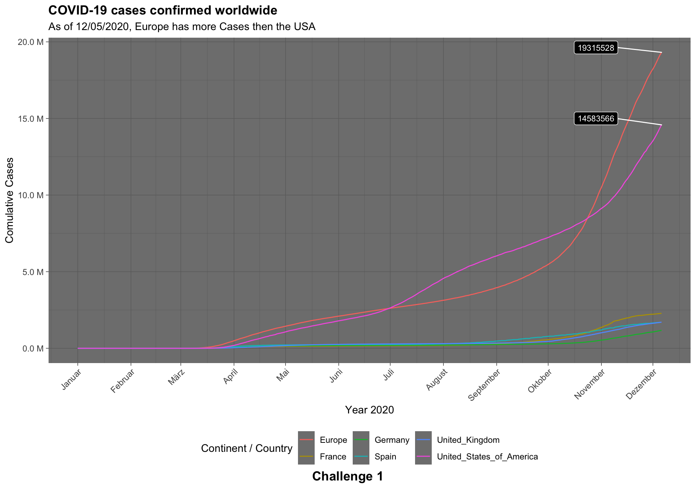
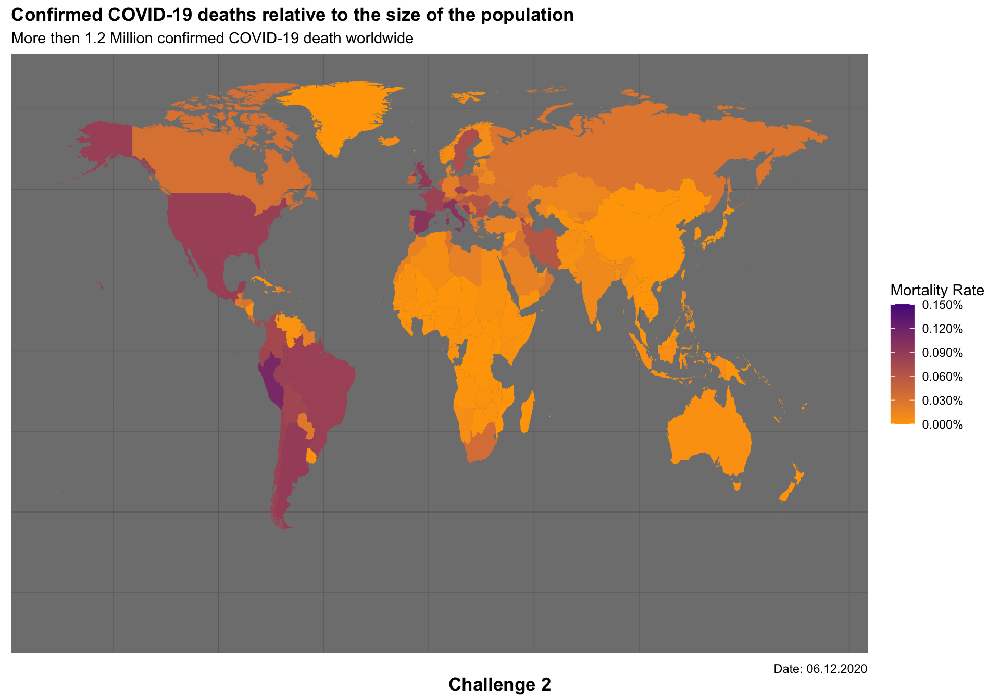

Map the time course of the cumulative Covid-19 cases!
# Load the data
library(tidyverse)## ── Attaching packages ─────────────────────────────────────── tidyverse 1.3.0 ──## ✓ ggplot2 3.3.2 ✓ purrr 0.3.4
## ✓ tibble 3.0.4 ✓ dplyr 1.0.2
## ✓ tidyr 1.1.2 ✓ stringr 1.4.0
## ✓ readr 1.4.0 ✓ forcats 0.5.0## ── Conflicts ────────────────────────────────────────── tidyverse_conflicts() ──
## x dplyr::filter() masks stats::filter()
## x dplyr::lag() masks stats::lag()library(lubridate)##
## Attaching package: 'lubridate'## The following objects are masked from 'package:base':
##
## date, intersect, setdiff, unionlibrary(data.table)##
## Attaching package: 'data.table'## The following objects are masked from 'package:lubridate':
##
## hour, isoweek, mday, minute, month, quarter, second, wday, week,
## yday, year## The following objects are masked from 'package:dplyr':
##
## between, first, last## The following object is masked from 'package:purrr':
##
## transposelibrary(ggthemes)
library(scales)##
## Attaching package: 'scales'## The following object is masked from 'package:purrr':
##
## discard## The following object is masked from 'package:readr':
##
## col_factorcovid_data_tbl <- read_csv("https://opendata.ecdc.europa.eu/covid19/casedistribution/csv")##
## ── Column specification ────────────────────────────────────────────────────────
## cols(
## dateRep = col_character(),
## day = col_double(),
## month = col_double(),
## year = col_double(),
## cases = col_double(),
## deaths = col_double(),
## countriesAndTerritories = col_character(),
## geoId = col_character(),
## countryterritoryCode = col_character(),
## popData2019 = col_double(),
## continentExp = col_character(),
## `Cumulative_number_for_14_days_of_COVID-19_cases_per_100000` = col_double()
## )setDT(covid_data_tbl)
# Tabel not europe
# Select columns and filter for countries
cumulative_covid_tbl <- covid_data_tbl[order(-dateRep) & countriesAndTerritories %in% c("Germany", "United_Kingdom", "France", "Spain", "United_States_of_America") & year == 2020,.(dateRep, day, month, year, cases, cumulative_cases = rev(cumsum(rev(cases)))), by = countriesAndTerritories]
# Setup table for europe
europe_data_tbl <- covid_data_tbl %>%
#Select the interesing columns
select(dateRep,day, month, year, cases, continentExp) %>%
# filter for relevant entries
filter(continentExp == "Europe" & year == 2020) %>%
# group to sum for europe over all countries
group_by(dateRep,day, month, year,continentExp) %>%
summarize(cases = sum(cases)) %>%
ungroup() %>%
# sort the dates
arrange(-year,-month,-day) %>%
# add cumsum
mutate(cumulative_cases=rev(cumsum(rev(cases)))) %>%
# rearange and rename
setnames(., "continentExp", "countriesAndTerritories") %>%
select(countriesAndTerritories,dateRep,day,month,year,cases,cumulative_cases)## `summarise()` regrouping output by 'dateRep', 'day', 'month', 'year' (override with `.groups` argument)#combine tables and structure for plotting
cumulative_combined_covid_monthly_tbl <- rbind(cumulative_covid_tbl,europe_data_tbl) %>%
group_by(countriesAndTerritories,month) %>%
summarize(cases_per_month = sum(cumulative_cases)) %>%
ungroup() %>%
mutate(month = recode(.$month, "1" = "January", "2" = "February","3"="March", "4" = "April", "5"="May","6"="June","7"="July","8"="August","9"="September","10"="October","11"="November","12"="December"))## `summarise()` regrouping output by 'countriesAndTerritories' (override with `.groups` argument)cumulative_combined_covid_tbl <- rbind(cumulative_covid_tbl,europe_data_tbl) %>%
mutate(dateRep = as.Date(dateRep, "%d/%m/%Y")) %>%
mutate(countriesAndTerritories = as.factor(countriesAndTerritories)) require("ggrepel")## Loading required package: ggrepellabels <- cumulative_combined_covid_tbl %>% filter(countriesAndTerritories %in% c("Europe","United_States_of_America")) %>%
group_by(countriesAndTerritories) %>%
summarize(max_cumulative_cases = max(cumulative_cases)) %>%
ungroup()## `summarise()` ungrouping output (override with `.groups` argument)cumulative_combined_covid_tbl %>%
ggplot(aes(dateRep, cumulative_cases, color = countriesAndTerritories)) +
geom_line(size = 0.5) +
scale_y_continuous(labels = number_format(scale = 1e-6, suffix = " M")) +
scale_x_date(date_breaks = "1 month", date_labels = "%B" ) +
# Labels
geom_label_repel(label = c(labels[2,2],labels[1,2]),
vjust = 0,
hjust = 2,
size = 3,
fill = "black",
color = "white",
#fontface = "italic",
data = cumulative_combined_covid_tbl %>%
filter(countriesAndTerritories %in% c("Europe","United_States_of_America")) %>%
filter(dateRep == max(cumulative_combined_covid_tbl$dateRep)))+
# Formatting
labs(
title = "COVID-19 cases confirmed worldwide",
x = "Year 2020",
y = "Comulative Cases",
#caption = "Challenge 1",
tag = "Challenge 1",
subtitle = "As of 12/05/2020, Europe has more Cases then the USA",
color = "Continent / Country"
) +
theme_dark() +
theme(
axis.text.x = element_text(angle = 45, hjust = 1),
legend.position = "bottom",
plot.title = element_text(face = "bold"),
plot.tag = element_text(face = "bold"),
plot.tag.position = "bottom"
)
Visualize the distribution of the mortality rate (deaths / population) with geom_map().
library(mapdata)## Loading required package: maps##
## Attaching package: 'maps'## The following object is masked from 'package:purrr':
##
## map# load map data
world <- map_data("world")
# work with the complete table again
# 1. sum um cases and death by country
# 2. add mortality rate
mortality_rate_tbl <- covid_data_tbl[,.(population = mean(popData2019), sum_deaths = sum(deaths)),by = countriesAndTerritories][,mortality_rate :=(sum_deaths/population)] %>%
mutate(across(countriesAndTerritories, str_replace_all, "_", " ")) %>%
mutate(countriesAndTerritories = case_when(
countriesAndTerritories == "United Kingdom" ~ "UK",
countriesAndTerritories == "United States of America" ~ "USA",
countriesAndTerritories == "Czechia" ~ "Czech Republic",
TRUE ~ countriesAndTerritories
))mortality_rate_tbl %>%
ggplot(aes(map_id= countriesAndTerritories)) +
geom_map(aes(fill = mortality_rate), map = world ) +
expand_limits(x = world$long, y = world$lat) +
scale_fill_continuous(low = "orange", high = "purple4",
labels = percent_format(),
limits=c(0,0.0015),
breaks=seq(0,0.0015,by=0.0003))+
# Formatting
labs(
title = "Confirmed COVID-19 deaths relative to the size of the population",
subtitle = "More then 1.2 Million confirmed COVID-19 death worldwide",
caption = "Date: 06.12.2020",
tag = "Challenge 2",
fill = "Mortality Rate"
) +
theme_dark() +
theme(
axis.title=element_blank(),
axis.text=element_blank(),
axis.ticks=element_blank(),
legend.position = "right",
plot.title = element_text(face = "bold"),
plot.tag = element_text(face = "bold"),
plot.tag.position = "bottom"
)